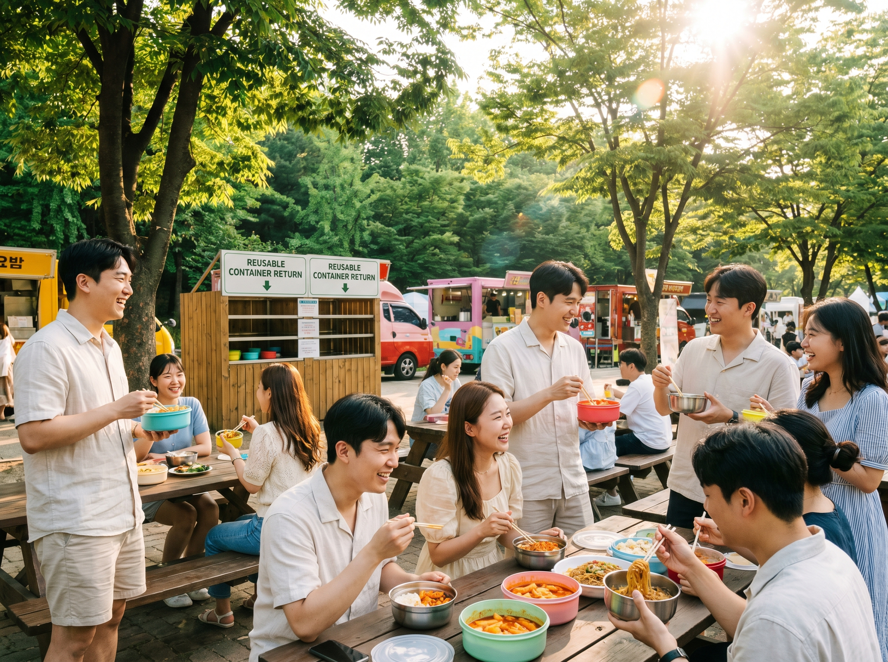
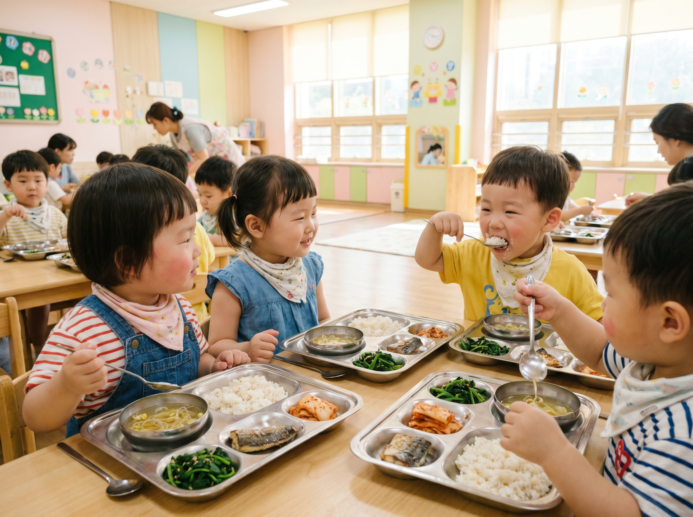
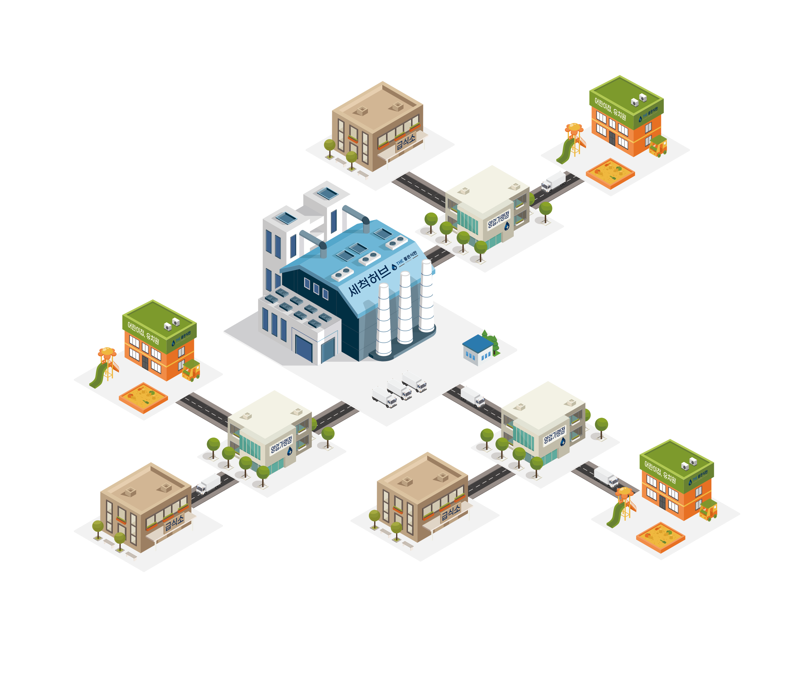
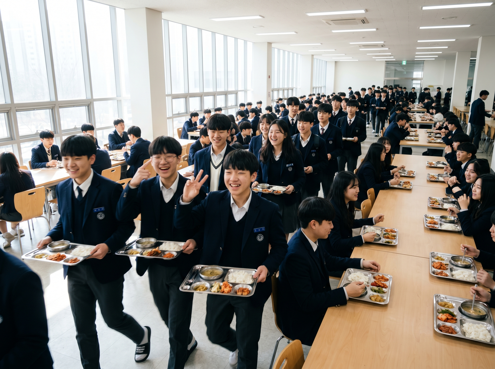
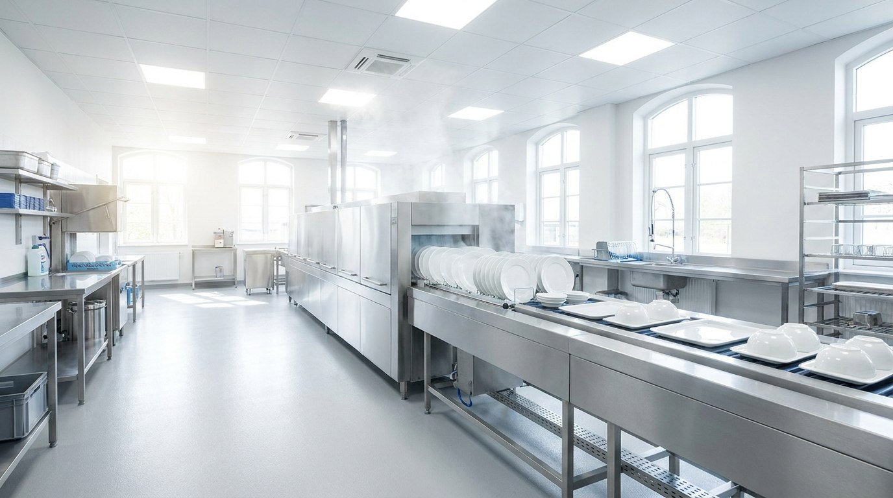

홈 / 소개
식기의 순환에서 시작해 지역 자원순환 인프라로. RE:able은 7년간 멈춤 없이 쌓아온 운영력과 데이터 기반 위생관리로 '파는 회사'가 아닌 '순환을 돌리는 회사'입니다.

RE:able — 다시(RE) + 가능하게(able)RE:able의 콜론 ":"은 두 잎사귀가 마주보며 순환하는 형상입니다. 한 번 쓰고 버리던 식기를 다시 돌리고, 그 순환이 지역 자원순환 인프라가 되는 여정 — 이름 자체가 우리의 미션입니다.
한 번 쓰고 버리는 식기를 다시 돌린다. 매일의 순환이 쌓여 인프라가 됩니다.
데이터로 위생·품질을 증명한다. ATP 100% 합격, 7년간 멈추지 않은 운영이 그 증거입니다.
거점 기반 회수·세척 물류로 지역 자원순환 인프라를 만든다. 우리가 서는 곳이 순환의 거점입니다.
법과 정책이 순환경제 시장을 열고 있습니다. 그러나 다회용기 사업은 대부분 '운영'에서 무너집니다. RE:able은 7년간 멈춤 없이 검증된, 데이터로 운영하는 사업자입니다.

안정적 매출 기반 · 7년 검증 운영RE:able은 2019년 설립된 주식회사 더좋은(The Joeun Inc.)이 운영하는 자원순환 브랜드입니다. 7년간 멈춤 없는 운영과 안정적인 매출 기반 위에서 흔들림 없이 성장해 온 본사·천안·인천 3법인 체제입니다.
자원순환 인프라 확장을 이끄는 브랜드 전면 운영 주체
대표이사 신동석 · 2019년 설립 · 자본금 3.5억 · 경기도 광명시
유아·급식·B2B 현장을 각각 브랜드화한 운영 자산
광명부터 천안까지 — 4개 거점 기반 회수·세척 물류망이 끊김 없는 순환을 가능하게 합니다.

운영본부 · 경영 · R&D · AI 식기세척 특허 본거지
생산 · 세척 · 경기남부 주요 배송 거점
경인 물류 · 맘스플래이트 인천 법인 운영
충남권 전담 · 별도 법인 · 수도권 외 확장 교두보

AI 식기세척 특허 제10-2966388호 · 2026년 등록식기세척·렌탈 사업 시작 — 순환의 첫 번째 고리
경인 물류 거점 확보, 유아 식기 케어 전문화
충남권 확장 — 수도권 외 순환 인프라 첫 걸음
기술 기반 성장 가능성을 공식 인정받다
환경경영·안전보건 국제표준 동시 인증, R&D 기반 공식화
기술혁신 역량 최고 등급 인정
제10-2966388호 — 국내 최초 AI 비전 기반 식기세척 특허
식기 순환을 넘어 지역 자원순환 인프라로의 본격 확장
전 고객사 730곳 기준, 2027년 목표 환경 효과입니다. 일회용을 다회용으로 바꿨을 때 줄어드는 실제 부담을 숫자로 보여드립니다.
벤처·이노비즈·ISO에서 AI 특허까지. 숫자 뒤에는 외부 기관이 검증한 기술력과 운영 기준이 있습니다.
대부분의 다회용기 사업이 운영에서 무너지는 이유는 단 하나 — 회수·세척·재배송의 연결고리를 유지할 데이터와 인프라가 없기 때문입니다. RE:able은 7년간 하루도 빠지지 않고 이 순환을 돌려왔습니다.
ATP 측정·IoT 센서 연동으로 세척 품질을 수치로 기록하고 증명합니다.
수거 당일 세척·포장 완료, 다음 날 현장 복귀. 끊김 없는 루프.
어린이집·유치원부터 기업·공공까지 다양한 현장을 매일 운영한 경험이 우리의 해자입니다.

특허 제10-2966388호 · AI 식기세척장치기관 규모와 운영 환경에 맞춰 맞춤 견적을 안내해 드립니다. 부담 없이 문의를 남겨주세요 — 영업일 기준 1일 이내에 회신드립니다.